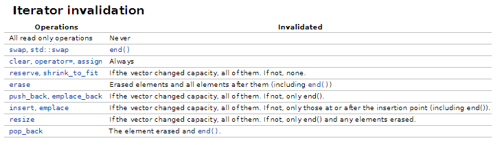
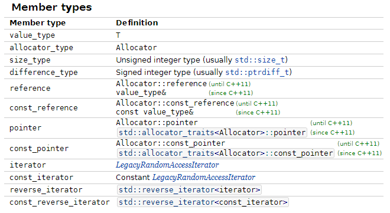
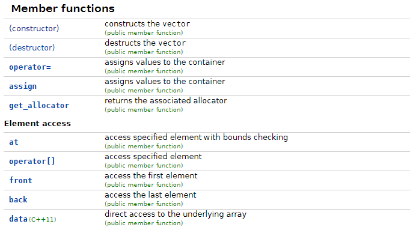
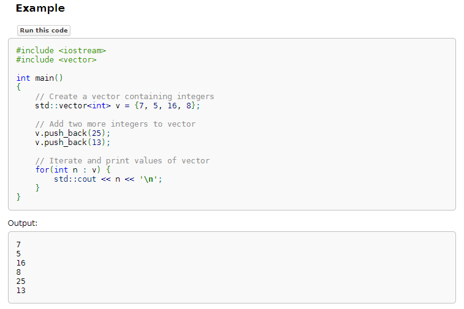

Un peu de doc...
Pour démarrez ce chapitre, nous allons vous expliquer comment parcourir la documentation que vous trouverez sur le site cppref.
Commencez par ouvrir cette page. Vous y trouverez la documentation de la classe vector.
A première vue, son contenu peut paraître indigeste. Nous allons donc vous expliquer comment il est structuré afin que vous puissiez vous y repérer plus facilement.
Documentation d’une classe
1. En-tête
Dans l’en-tête de la documentation, vous trouverez le nom de la classe, suivi du header à inclure afin de pouvoir l’utiliser.
Une phrase décrit ensuite brièvement le rôle de la classe : on nous dit par exemple que vector est un conteneur séquentiel de taille dynamique.
Un conteneur séquentiel est un conteneur “linéaire”, comme un tableau ou une liste. Les arbres et les graphes ne sont donc pas des conteneur séquentiels.
On trouve ensuite une description plus détaillée, dans laquelle il est possible d’obtenir des informations sur comment le conteneur est implémenté :
- Comment les éléments sont organisés en mémoire ? (contigûs comme dans un tableau, éparpillés comme dans une liste chaînée, …)
- Si l’utilisateur doit penser à allouer ou libérer de la mémoire. Dans le cas du
vector, tout est géré automatiquement par la classe. - La complexité des opérations classiques (accès, insertions, suppressions, etc),
- …
2. Paramètres de template / Spécialisations
Les paramètres de templates correspondent aux éléments que vous devez indiquer dans les <...> de vector. Ces éléments doivent parfois respecter des contraintes, et cette section de la documentation permet d’en prendre connaissance.
On peut ici voir que pour utiliser un vector<T> avec une version inférieure à C++11, il faut que T soit constructible par copie (= contructeur de copie disponible) et assignable par copie (= opérateur d’assignation par copie disponible).
Qu’en est-il d’Allocator ? Pourquoi n’avons nous pas eu à fournir de valeur pour ce paramètre à vector ?
Nous n’étudierons pas dans ce cours le rôle du paramètre Allocator. Cependant, sachez que si vous avez pu écrire vector<int> plutôt que vector<int, allocator> jusqu’ici, c’est parce que ce paramètre a une valeur par défaut. Pour connaître la valeur par défaut éventuelle d’un paramètre de template, vous pouvez retourner voir l’en-tête de la page.
Juste après les paramètres, vous trouvez des informations sur les éventuelles spécialisations de la classe.
Une spécialisation est une version un peu modifiée de la classe, qui sera utilisée à la place de la version de base si on lui donne des paramètres de template particuliers.
Sur cette page, on vous dit que si vous utilisez des vector<bool>, alors l’implémentation de la classe est adaptée de manière à occuper moins d’espace en mémoire.
3. Invalidation d’itérateurs
On trouve ensuite la liste des fonctions qui, lorsqu’elles sont appelées, invalident les itérateurs.

Prenons l’exemple suivant :
std::vector<int> values { 0, 1, 2 };
auto begin_it = values.begin(); // <- begin retourne un itérateur pointeur sur le premier élément du tableau.
std::cout << *begin_it << std::endl; // <- *begin_it permet d'accéder à l'élément pointé par begin_it, donc affiche 0.
values.emplace_back(3); // <- d'après la documentation, emplace_back invalide tous les itérateurs.
std::cout << *begin_it << std::endl; // <- il est donc invalide d'utiliser begin_it dans cette instruction.
En effet, comme emplace_back() peut provoquer des réallocations mémoires, le bloc mémoire sur lequel l’itérateur pointait peut avoir été libéré.
Il n’est donc plus valide d’utiliser l’itérateur, et c’est ce que la documentation nous indique ici.
Plus généralement, lorsqu’un itérateur est invalidé, ce n’est pas seulement l’accès au contenu de l’itérateur qui doit être évité, mais toutes les opérations qui peuvent être exécutée dessus. Seule la réassignation de l’itérateur est possible.
std::vector<int> values { 0, 1, 2, 3 };
auto it0 = values.begin(); // 0
auto it1 = it0 + 1; // 1
auto it2 = it1 + 1; // 2
values.erase(it1); // <- invalide it_1 et it_2 mais pas it_0
auto v1 = *it1; // INVALIDE car on utilise it1
auto it3 = it2 + 1; // INVALIDE car on utilise it2
++it2; // INVALIDE car on utilise it2
it2 = it0 + 2; // OK car it0 est toujours valide et on réassigne it2 (qui est maintenant valide également)
auto v2 = *it2; // OK car it2 est valide depuis l'instruction précédente.
Sachez que si vous êtes en train de parcourir un conteneur au moyen d’une boucle foreach, vous ne devez utiliser aucune fonction pouvant invalider l’itérateur end().
Dans le cas du vector, si vous regardez le tableau, cela élimine donc toutes les fonctions qui ne sont pas des opérations de lecture seule.
4. Types membres
La section suivante donne la liste des types définis à l’intérieur de la classe. On ne s’intéressera pas à son contenu pour le moment.

5. Fonctions
On trouve enfin la liste des fonctions que l’on va pouvoir utiliser sur la classe. C’est cette partie que vous consulterez le plus souvent.

Cette liste est organisée en catégories, dont la première contient toujours le constructeur, le destructeur et l’opérateur d’assignation (et parfois quelques autres fonctions). Sur chaque ligne est indiquée le nom de la fonction, une brève description de ce qu’elle fait, la version à partir de laquelle elle est disponible et sa visibilité.
6. Exemple
Tout en bas de la page, vous trouvez généralement un exemple permettant de comprendre très rapidement comment la classe peut s’utiliser.

Documentation d’une fonction
Cliquez maintenant sur la fonction emplace_back, afin d’ouvrir la page contenant sa documentation. Nous détaillerons seulement les sections les plus importantes.
1. En-tête
Dans l’en-tête des pages de documentation de fonctions, vous trouverez les signatures des différentes surcharges de la fonction, ainsi que les versions pour lesquelles elles sont disponibles.
Vous pouvez par exemple voir qu’initialement, emplace_back ne retournait rien, et qu’à partir de C++17, elle retourne une référence.
En-dessous des signatures des surcharges, vous trouvez le détail ce que la fonction fait pendant son appel.
2. Paramètres
Vous trouvez ici pour chaque paramètre attendu par la fonction, ce que celle-ci compte en faire. Notez par exemple que dans le cas de emplace_back, les arguments sont directement transmis au constructeur de l’élément à insérer.
Si vous avez une classe Person dont le constructeur attend un prénom et un nom, vous pouvez donc écrire le code suivant :
std::vector<Person> persons;
persons.emplace_back("Bruce", "Wayne");
persons.emplace_back("Clark", "Kent");En dessous des paramètres de la fonction, on vous indique les éventuelles contraintes sur les paramètres de template. Si on souhaite appeler emplace_back sur un std::vector<Person>, il faut que Person soit MoveInsertable et EmplaceConstructible. Vous pouvez cliquer sur chacune de ces contraintes si vous désirez savoir ce qu’elles impliquent.
3. Valeur de retour
On vous indique simplement ce que la fonction vous renvoie.
4. Exceptions
Il est possible de lancer des exceptions en C++. Cette section indique la liste des exceptions que la fonction peut lancer et ce qu’il se passe dans ce cas-là.
Pour emplace_back, on voit que si une exception est lancée par le move constructor de l’élément, alors le comportement de la fonction est indéfini (undefined behavior).
5. Exemples
En fin de page, vous trouverez finalement le ou les exemples d’utilisation de la fonction.
Le premier réflexe à avoir lorsque vous voulez savoir comment utiliser une fonction, c’est d’aller voir les exemples. Vous pourrez généralement récupérer et adapter le code qui vous est présenté à votre propre cas d’utilisation.
Mission de recherche
Vous allez maintenant partir en mission. Votre objectif est de collecter les renseignements nécessaires pour répondre aux questions suivantes :
-
Quelle est la complexité d’insertion dans une
std::map?On peut trouver ce genre d’information dans l’en-tête de la documentation de la classe
map. Il y est indiqué que les opérations de recherche, suppression et insertion sont de complexité logarithmique. -
Quelles différences y a-t-il entre les fonctions
push_back()etemplace_back()de la classestd::vector?En comparant les signatures de
push_backetemplace_back, on se rend compte qu’il faut fournir directement àpush_backl’élément à insérer (un seul élément de typeT), alors qu’on peut fournir àemplace_backles paramètres permettant de construire le nouvel élément. -
Quelle fonction permet de savoir si un conteneur est vide ?
3/ En regardant sur les pages de différentes classes de conteneurs (
vector,array,map,set, etc), on se rend qu’elles ont toutes une fonction membreempty(), qui renvoietruesi le conteneur est vide. -
Quelle est la différence entre
std::vector::size()etstd::vector::capacity()?4/ Il suffit de lire la description des deux fonctions pour se rendre compte que
size()renvoie le nombre d’éléments du tableau, tandis quecapacity()renvoie le nombre d’éléments pouvant tenir dans l’espace mémoire actuellement alloué par le tableau. L’exemple fourni sur la page decapacity()met bien en valeur cette distinction. -
A quoi sert la classe
std::stack?5/ D’après la description dans l’en-tête de
stack, il s’agit d’une pile, c’est-à-dire une structure LIFO (last-in-first-out). Ceci veut dire que c’est le dernier élément rajouté (push) qui est retiré en premier (pop). On peut aussi dire structure FILO (first-in-last-out). -
Quelle fonction permet de retirer le dernier élément d’un objet de type
std::queue?6/ En parcourant la liste des fonctions sur la page de
std::queue, on se rend compte qu’il n’existe pas de fonction permettant de retirer son dernier élément.